Spatial Computing & Informatics Laboratory
Spatial Sciences Institute, University of Southern California
who we are
research & projects
publications
people
join us
sponsors

Hosted on GitHub Pages — Theme by orderedlist
WHO WE ARE
We are an interdiciplinary research lab at the Spatial Sciences Institute, University of Southern California. Our research focus lies at the intersection of computer science and spatial sciences where we build intelligent algorithms and applications for:
discovering, collecting, fusing, and analyzing data from heterogeneous sources to solve real-world problems.
For example, we are pioneering novel map processing technologies to unlock historical geographic information from maps. Our open-source software, Strabo, “reads” scanned maps for automatically identifying historical locations of places. In another project, in collaboration with the USC Information Sciences Institute and the USC Keck Medical School, we are developing data mining algorithms and a system for automatic predictions of fine-scale air pollutant concentrations.
Here are some keywords for the research topics we are working on:
- Information Integration
- GIScience
- Computer Vision, Image Processing & Recognition with Deep Learning Tools
- Data Mining with Spark and Scala
- Spatial Data Analytics
Since 2013, more than 60 students and 6 postdoctoral researchers have worked in the lab, including one local high school student, a number of visiting international students, and some USC undergraduate and graduate students GeoDisgn, electrical engineering, spatial informatics, computer science, and data informatics. One-third of the 50+ research students are female students in science and engineering.
RESEARCH & PROJECTS
Data Mining and Analytics
#spark #scala #python #postgres #postgis #qigs #ai #information_integration #data_mining #machine_learning #semantic_web_technologies #knowledge_graph #giscience
JonSnow: Mining Large Online Datasets for Air Quality Prediction
SANSA: Building Knowledge Graph to Support Event Prediction
KarmaCAD: Automatically Inferring User Intent of CAD Models
Karma: A Data Integration Project
Transportation
Digital Map Processing
#opencv #tesseract #qgis #postgres #postgis #optical_character_recognition #deep_learning #cnn #image_processing #computer_vision #graphics_recognition #pattern_recognition #machine_learning #semantic_web_technologies #giscience
ARYA: Fully Automatic Recognition System for Processing Big Map Archives
STRABO: Text Recognition in Maps, Road Vectorization from Maps, and Recognition and Linking of Map Symbols
Drones
#point_cloud
ICT Collaboration Drone related projects at ICT
Data Stories
#qgis #arcgis #web_map #information_integration #giscience #gis
Linking Historical Maps to USC Shoah Foundation Visual History Archive
Visualizing Climate Change with Maps
Drones
We are working with USC Institute for Creative Technologies (ICT) on a variety of dron related projects. Here are some of the project websites and demonstration videos:
- One World Terrain
- dronemapping
- VR work optimizing terrain and UI for the Vive: here and here
- Photogrammetric collection and reconstruction: here and here
- Photogrammetric research
see other projects
Mining Large Online Datasets for Air Quality Modeling
JonSnow: Mining public datasets for modeling intra-city PM2.5 concentrations at a fine spatial resolution.
Air quality models are important for studying the impact of air pollutant on health conditions. Existing work typically relies on area-specific, expert-selected attributes of pollution emissions (e,g., transportation) and dispersion (e.g., meteorology) for building the model for each combination of study areas, pollutant types, and spatiotemporal scales.
In this project, we are building a data mining approach, JonSnow, which utilizes publicly available OpenStreetMap (OSM) data to automatically generate air quality model for the concentrations for any type of pollutants at various temporal scales. Our approach utilizes the PRISMS-DSCIC infrastructure (image below) developed at USC Information Sciences Institute as the data collection, manipulation, and analysis platform.
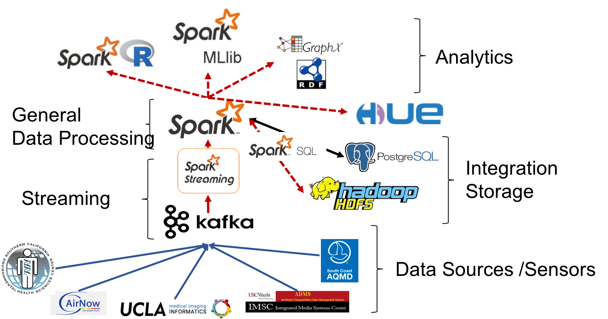
The PRISMS-DSCIC (Pediatric Research using Integrated Sensor Monitoring Systems - Data and Software Coordination and Integration Center) is an NIH-NIBIB (National Institutes of Health - National Institute of Biomedical Imaging and Bioengineering) funded initiative to address pediatric asthma as a chronic disease of childhood. PRISMS-DSCIC is responsible for collecting, storing, integrating, and analyzing real-time environmental, physiological and behavioral data obtained from heterogeneous sensors and traditional data sources to help researchers to predict and prevent asthma attacks efficiently.
JonSnow automatically generates (domain-) expert-free model for accurate PM2.5 concentration predictions, which can be used to improve air quality models that traditionally rely on expert-selected input.
The image below shows the PM2.5 AQI predictions from JonSnow (left) and the traditional spatial interpolation method, IDW (right), for Dec 2016 (top) and Jan 2017 (bottom). As expected, IDW could not generate fine-scale predictions while JonSnow successfully identified intra-city areas where the air quality is typically poor (e.g., the south part of the city near the port of San Pedro and downtown Los Angeles).
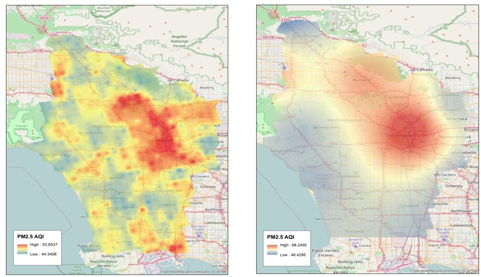 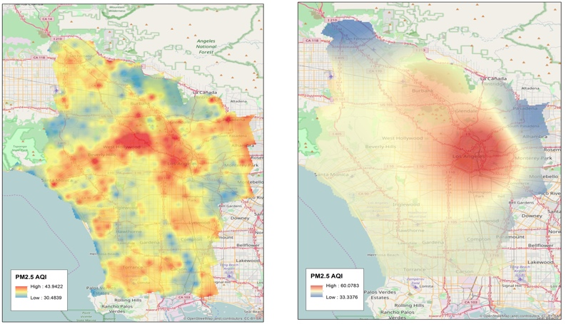Ph.D. Student, USC Computer Science
see other projects
Towards Interoperability of CAD Models
KarmaCAD: Automatically Inferring User Intent of CAD Models
The difficulties in CAD data interoperability arise from the need for using heterogeneous CAD systems and the lack of a proper notion for describing CAD designs. Existing CAD systems each have their data formats, and the information recorded in these formats vary significantly. Some systems can record design histories for representing the design rationales, but others do not.
In this project, we study the CAD interoperability problem focusing on developing a semi-automatic approach that allows CAD users to record their design intention efficiently. We first created our JSON format to represent the fixed and dimension relations of CAD designs. Then we built a SolidWorks plugin called RelationFixer, which can
- convert a CAD model to the JSON format,
- use multiple CAD models to automatically figure out the required fixed and dimension relations for representing a part of the user intent, and
- convert the JSON representation of the CAD model and the identified constrains to a SolidWorks CAD model.
Given a few examples of the desired and undesired variations of a CAD design, RelationFixer learns the design rationales automatically and selects a set of fixed and dimension relations that best represent the design rationales. We recreated the ambiguous CAD designs described in Raghothama and Shapiro’s previous work (Raghothama and Shapiro, 2002) and tested RelationFixer with these CAD designs. In the experiment, RelationFixer successfully learned the design rationales from a few examples of design variations and generated constraints between sketches in the CAD models to prevent possible ambiguities.
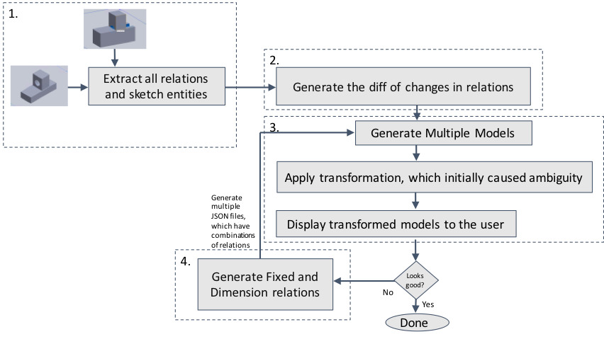
see other projects
Predictive Data Analytics using Knowledge Graph
SANSA: Building Knowledge Graph to Support Event Prediction
A domain expert can process heterogeneous data to make meaningful interpretations or predictions from the data. For example, by looking at research papers and patent records, an expert can determine the maturity of an emerging technology and predict the geographic location(s) and time (e.g., in a certain year) where and when the technology will be a success. However, this is an expert- and manual-intensive task.
In this project, we are building an end-to-end system, Sansa, that leverages data collected from public sources to predict the (geographic) center(s) of a type of technology and when the center(s) will emerge. In our pilot study, we used Sansa to predict the future (geographic) center(s) for fuel cell technologies. Sansa extracts and cleanses data from public sources including research papers and patent records. After data extraction and cleansing, Sansa uses an ontology-based data integration method to generate knowledge graphs in the RDF (Resource Description Framework) format and enables users to switch quickly between machine learning models for predictive analytic tasks. Here's a demonstration of Sansa:
Our work on SANSA won the USGIF and NVIDIA GPU Essay Challenge: “If you were given dedicated access to an NVIDIA GPU-powered supercomputer, what problems could you solve?”

Ph.D. Student, USC Computer Science
see other projects
Linking Historical Maps to USC Shoah Foundation Visual History Archive
The Visual History Archive (VHA) in the USC Shoah Foundation contains a large digital life story collection of survivors before, during, and after the Holocaust and other genocides. Currently, location information (e.g., place names) mentioned in the VHA is indexed by keywords. For example, using “Poland” as the keyword for place search on the VHA Online returns 5,325 indexing terms in which the indexing terms (place names) with verified locations are displayed in a Google Maps web interface. Since place names and administrative boundaries can change significantly over time, displaying search results on a current map would not provide the best visualization tool for navigating the VHA digital collection through space and time. In addition, a number places mentioned (indexed) in the testimony could not be located due to the lack of historical sources for verifying the location information of these places. This limits the opportunity for researchers, educators, and the general public to access valuable VHA materials and prevents the VHA collection from being indexed and searched by advanced spatial queries (e.g., finding the testimonies mentioned cities or towns in Poland between 1930 and 1945).
Historical maps are a great source of detailed place information in the past. For example, during the World War II (WWII), the US Army Map Service (AMS) created around 40,000 maps covering a significant amount of the earth. Other map sources provide detailed historical pre- and post-WWII maps, such as the Polish mapping company, Centrum Kartografii, which offers pre-WWII maps of Poland with a comprehensive list of place names including towns, manufacturing plants, monuments, etc. These historical maps can be found in either paper or scanned (digital) format in map archives such as the David Rumsey Map Collection or libraries including the USC Libraries, UCLA Map Libraries, Western Michigan Libraries, and the Library of Congress. The problem we are addressing here is how to systematically and effectively link places mentioned in the VHA collection to relevant historical maps and other historical materials.
Created by Andrew Hsu
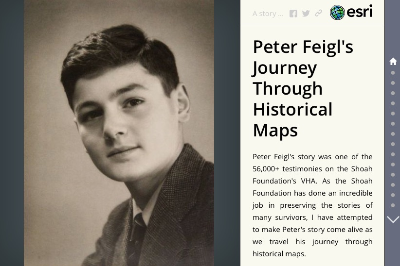
Created by Robin Franke

Created by Alex Chen
See the poster presented at the 28th International Cartographic Conference for a project overview.
see other projects
Visualizing Climate Change with Maps
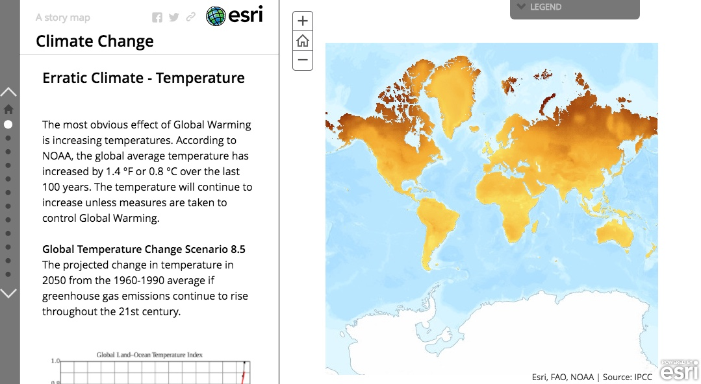Climate Change, Created by Hariprabha Mallyah
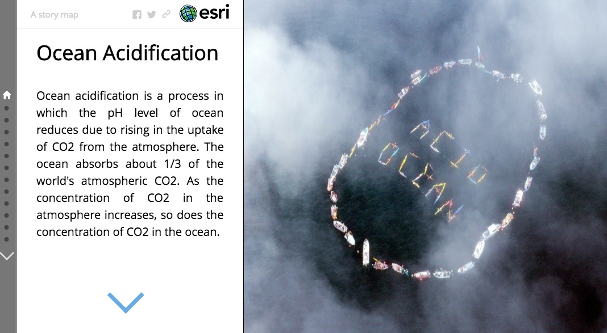
Ocean Acidification, Created by Nandan Nayak
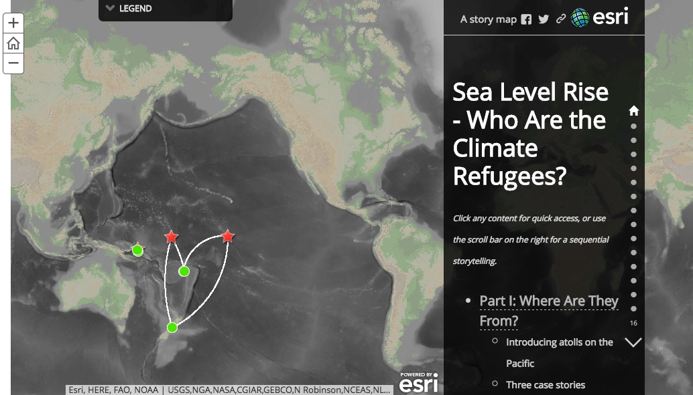
Climate Refugee, Created by Joanna Wang
see other projects
Fully Automatic Recognition System for Processing Big Map Archives
ARYA: Automatically Training Deep Learning Models for Image Recognition
Detailed data on the states and changes of landscapes in the past is essential for understanding the causes and consequences of environmental change, which supports a variety of studies, such as cancer and environmental epidemiology. However, existing data sources (e.g., online mapping services) typically contain only contemporary information. Historical maps are a great source of geographic information in the past and are often the only source that provides professionally surveyed historical data. In the U.S., the U.S. Geological Survey (USGS) has created over 200,000 topographic maps since 1884. According to the USGS, in the United States these topographic maps “portray both natural and manmade features. They show and name works of nature including mountains, valleys, plains, lakes, rivers, and vegetation. They also identify the principal works of man, such as roads, boundaries, transmission lines, and major buildings.”
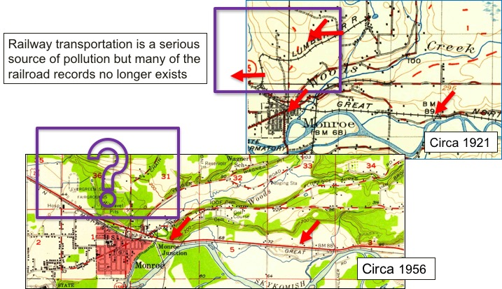In this project, we are developing a novel map processing system for automated recognition of geographic information from the 200,000 plus scanned maps in the USGS Historical Topographic Map Series. Our system, Arya, uses “contextual data” to determine likely locations of geographic features of interest in a map and uses the locations to automatically collect training data for building convolutional neural networks (CNN). Contextual data are contemporary spatial layers (e.g., current railroad locations) for which at many of these locations railroad pixels can be found in historical maps of the same area.
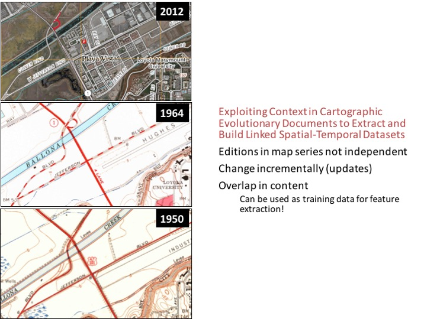 Also see our NSF project website here.
Ph.D. Student, USC Computer Science

Ph.D. Student, USC Computer Science
see other projects
Karma: A Data Integration Project
ArcKarma: Efficient cleaning and transformation of geospatial data attributes (an Esri ArcGIS plugin)
A significant challenge in handling geographic datasets is that the datasets can come from heterogeneous sources with various data qualities and formats. Before these datasets can be used in a Geographic Information System (GIS) for spatial analysis or to create maps, a typical task is to clean the attribute data and transform the data into a uniform format. However, conventional GIS products focus on manipulating the spatial component of geographic features and only offer basic tools for editing the attribute data (e.g., one row at a time). This limits the capability for handling large datasets in a GIS since manually editing and transforming attribute data between different formats is not practical for thousands of geographic features. We present ArcKarma, which is built on our previous work on data transformation, to efficiently clean and transform data attributes in a GIS. ArcKarma generates transformation programs from a few user-provided examples and applies these programs to transform individual attribute columns into the desired formats. We show that ArcKarma produces accurate results and eliminates the need for laborious manual data cleaning and scripting tasks.
USC KarmaKarma with geospatial data

ArcKarma

see other projects
Automatic Map Processing
Strabo: A system for automatic text recognition, road vectorization, and symbol recognition from maps.
Text Recognition in Maps (OCR for Maps)
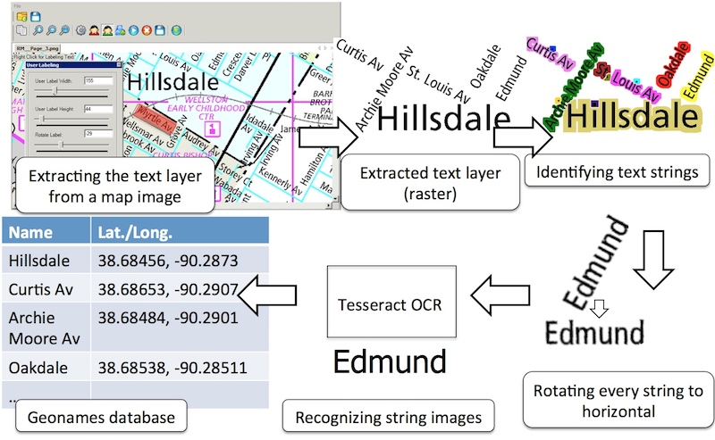
Generating geonames from map images: ArcStrabo (an Esri ArcGIS plugin)

see other projects
Automatic Map Processing
Strabo: A system for automatic text recognition, road vectorization, and symbol recognition from maps.
Road Vectorization from Maps 
Sample results:
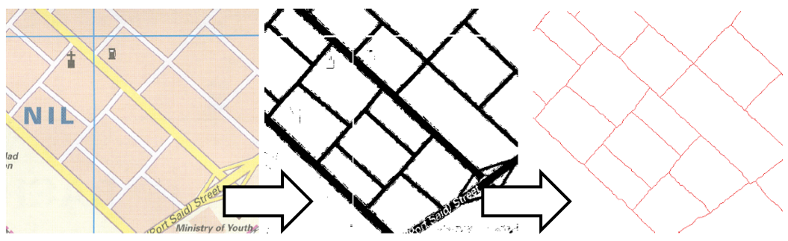

Generating named road vector data from map images (sample results)
 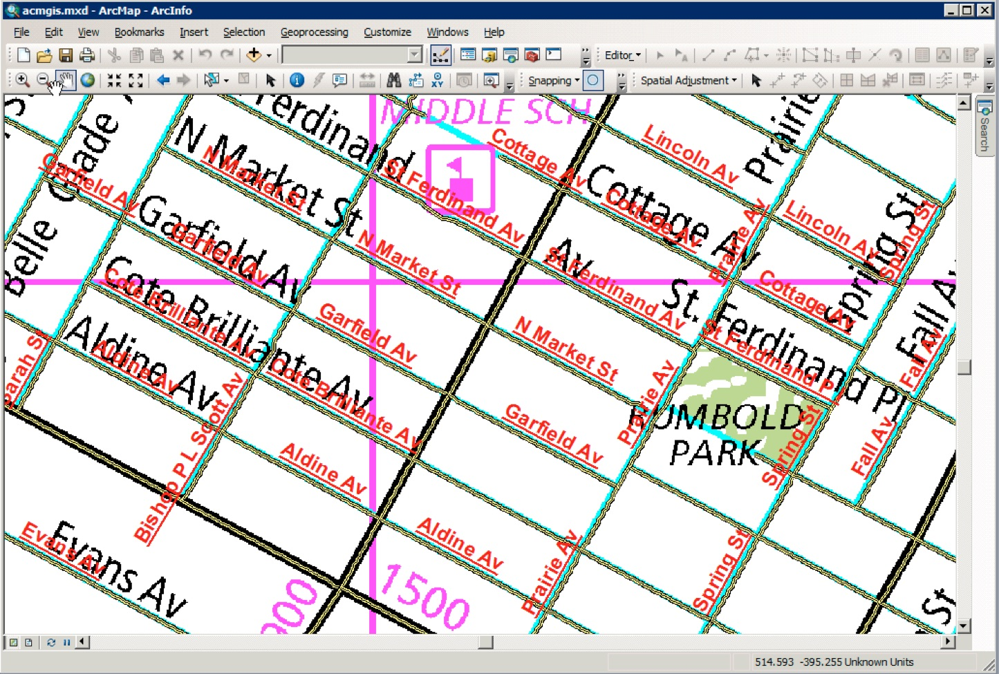
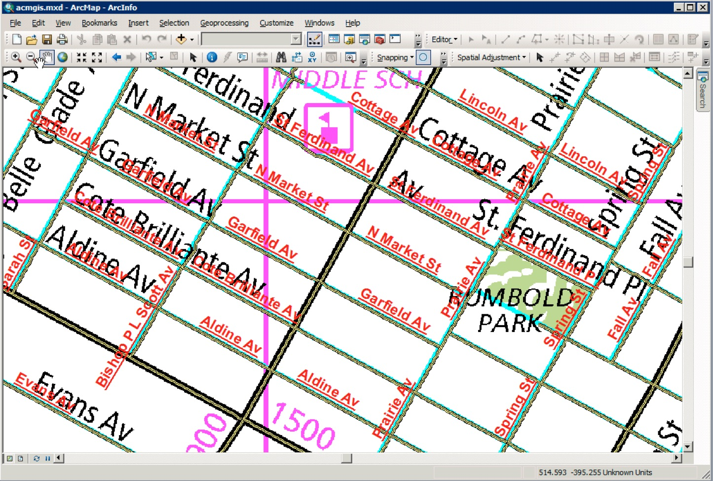
see other projects
Automatic Map Processing
Strabo: A system for automatic text recognition, road vectorization, and symbol recognition from maps.
Symbol Recognition in Maps
1. Take a scanned map...(here shows an USGS historical topographic map)
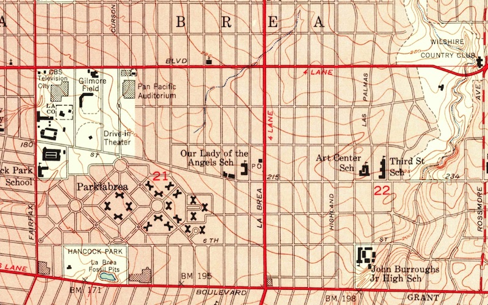
and a symbol example

2. Automatically identify map symbols that look like the symbol example (the blue boxes)
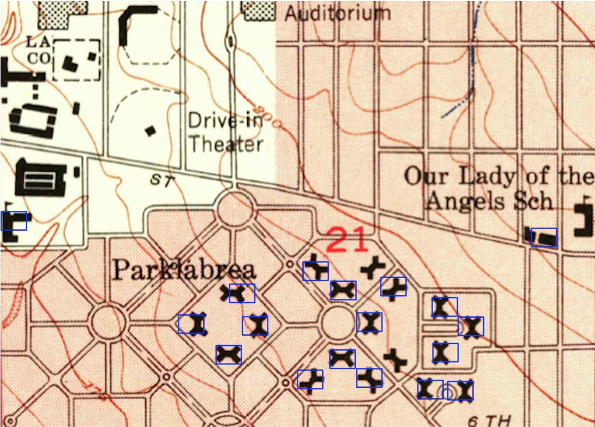
Linking Map Symbols to DBPedia
1. Take a scanned map...
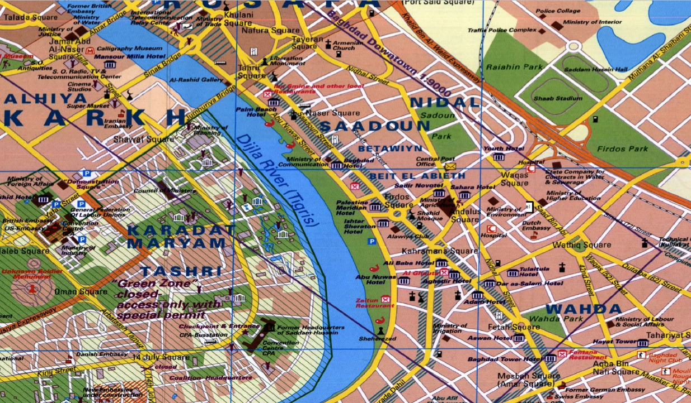
2. Automatically identify hotel symbols and link the symbol locations to DBpedia
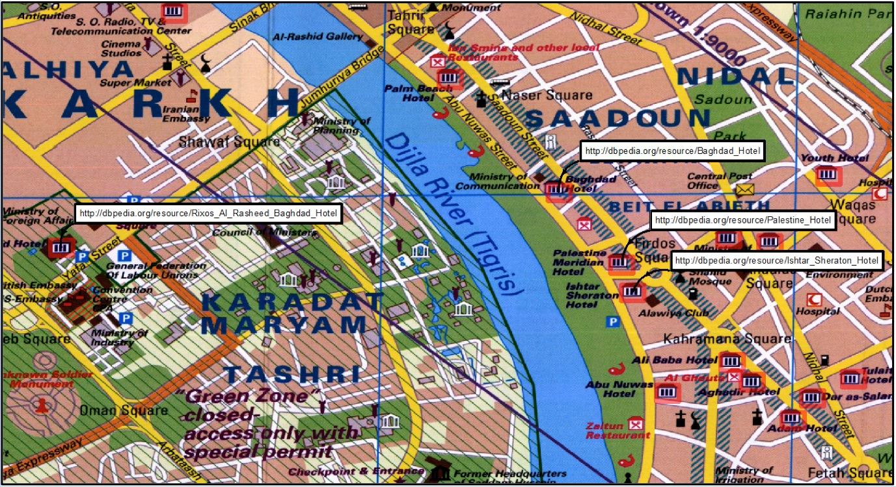
3. Linked locations in a GIS
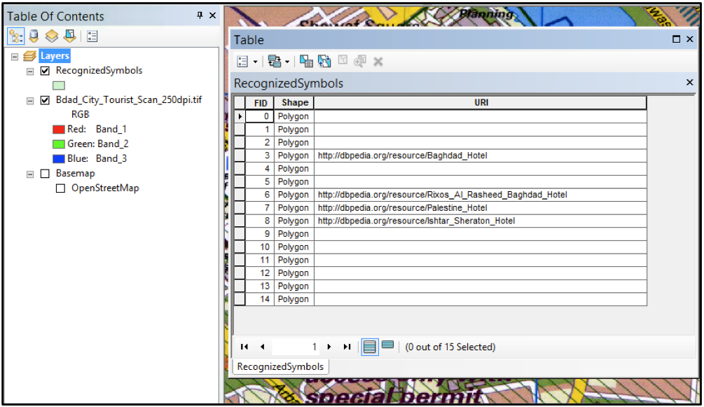
see other projects
PUBLICATION
Book Chapters
- Chiang, Y.-Y. (April 2017). Unlocking Textual Content from Historical Maps – Potentials & Applications, Trends, and Outlooks. In S. K.C., H. Mallikarjun, B. Vitoantonio, and N. Atul (eds.), Recent Trends in Image Processing and Pattern Recognition. Communications in Computer and Information Science, volume 709 (pp. 111–124). Singapore: Springer.
- Park, W., Chiang, Y.-Y., Lee, S. J., and Yu, K. (2016) Hot Spots of Tweets Related to Food, Entertainment, Work, and Study in Gangnam Area of Seoul, Korea. In Esri Map Book, volume 31: GIS – Enabling a Smarter World. Redlands, CA, USA: Esri.
- Chiang, Y.-Y., Leyk, S., and Knoblock, C. A. (2013). Efficient and Robust Graphics Recognition from Historical Maps. In Y.-B. Kwon and J.-M. Ogier (eds.), Graphics Recognition. New Trends and Challenges. Lecture Notes in Computer Science, volume 7423 (pp. 25–35). Berlin, Germany: Springer.
- Chiang, Y.-Y. and Knoblock, C. A. (2012). Generating Named Road Vector Data from Raster Map. In M. Kwan, M. Goodchild, and S. Shekhar (eds.), Geographic Information Science. GIScience 2012. Lecture Notes in Computer Science, volume 7478 (pp. 57–71). Berlin, Germany: Springer.
- Chiang, Y.-Y. and Knoblock, C. A. (2009). Extracting Road Vector Data from Raster Maps. In J.-M. Ogier, W. Liu, and J. Lladós (eds.), Graphics Recognition: Achievements, Challenges, and Evolution. GREC 2009. Lecture Notes in Computer Science, volume 6020 (pp. 93–105). Berlin, Germany: Springer.
Refereed Journal Articles
- Zhang, Y., Ma, Q., Chiang, Y.-Y., Knoblock, C., Zhang, X., Yang, P., ... & Hu, X. (2019). Extracting geographic features from the Internet: A geographic information mining framework. Knowledge-Based Systems, 174(15): 57–72. doi: 10.1016/j.knosys.2019.02.031
- Wu, J., Wei, P., Yuan, X., Shu, Z., Chiang, Y.-Y., Fu, Z., Deng, M. (2019). A New Gabor Filter-based Method for Automatic Recognition of Hatched Residential Areas. IEEE Access, 7(1): 40649–40662. doi: 10.1109/ACCESS.2019.2907114
- Li, K., Habre, R., Deng, H., Urman, R., Morrison, J., Gilliland, F. D., Ambite, J.-L., Stripelis, D., Chiang, Y.-Y., Lin, Y., Bui, A. A. T., King, C., Hosseini, A., Van Vliet, E., Majid, S., Eckel, S. P. (2018). Applying Multivariate Segmentation Methods to Human Activity Recognition from Wearable Sensors Data. JMIR mHealth and uHealth (In press).
- Uhl, J. H., Leyk, S., Chiang, Y.-Y., Duan, W., and Knoblock, C. A. (2018). Spatializing Uncertainty in Image Segmentation Using Weakly Supervised Convolutional Neural Networks: A Case Study from Historical Map Processing. IET Image Processing (In press).
- VoPham, T., Hart, J. E., Laden, F., Chiang, Y.-Y. (2018) Emerging Trends in Geospatial Artificial Intelligence (geoAI): Potential Applications for Environmental Epidemiology. Environmental Health, (In press).
- Uhl, J. H., Leyk, S., Chiang, Y.-Y., Duan, W., and Knoblock, C. A. (2018) Map Archive Mining: Visual-Analytical Approaches to Explore Large Historical Map Collections. ISPRS International Journal of Geo-Information, 7(4), 148. doi: 10.3390/ijgi7040148
- Wu, J., Wan, Y., Chiang, Y.-Y., Fu, Z., Deng, M. (2018) A Matching Algorithm Based on Voronoi Diagram for Multi-Scale Polygonal Residential Areas. IEEE Access, vol 6: 4904 – 4915. doi: 10.1109/ACCESS.2018.2793302
- Duan, W. and Chiang Y.-Y. (2017) SRC: A Fully Automatic Geographic Feature Recognition System. SIGSPATIAL Special, 9(3):6-7. doi: 10.1145/3178392.3178396
- Lin, H. and Chiang Y.-Y. (2017) SRC: Automatic Extraction of Phrase-level Map Labels from Historical Maps. SIGSPATIAL Special, 9(3):14-15. doi: 10.1145/3178392.3178400
- Chiang, Y.-Y., Leyk, S., Honarvar Nazari, N., Moghaddam, S., and Tan, T. X. (2016) Assessing Impact of Graphical Quality on Automatic Text Recognition in Digital Maps. Computers & Geosciences, 93:21–35. doi: 10.1016/j.cageo.2016.04.013
- Wu, W., Meng, W., Su, W., Zhou, G., and Chiang, Y.-Y. (2015) Q2P: Discovering Query Templates via Autocompletion. ACM Transactions on the Web, 10(2):1–29. doi: 10.1145/2873061
- Chiang, Y.-Y. and Knoblock, C. A. (2014) Recognizing Text in Raster Maps. GeoInformatica, 19(1):1–27. doi: 10.1007/s10707-014-0203-9
- Chiang, Y.-Y., Leyk, S., and Knoblock, C. A. (2014). A Survey of Digital Map Processing Techniques. ACM Computing Surveys, 47(1):1–44. doi: 10.1145/2557423
- Chiang, Y.-Y. and Knoblock, C. A. (2013). A General Approach for Extracting Road Vector Data from Raster Maps. International Journal of Document Analysis and Recognition, 16(1):55–81. doi:10.1007/s10032-011-0177-1
- Chiang, Y.-Y., Knoblock, C. A., Shahabi, C., and Chen, C.-C. (2009). Automatic and Accurate Extraction of Road Intersections from Raster Maps. GeoInformatica, 13(2):121– 157. doi:10.1007/s10707-008-0046-3
Refereed Conference & Symposium Proceedings
- Garijo, D., Khider, D., Ratnakar, V., Gil, Y., Cobourn, K., Deelman, E., Duy, C., Ferreira da Silva, R., Kemanian, A., Knoblock, C. A., Kumar, V., Peckham, S., Chiang, Y.-Y., Khandelwal, A., Pham, M., Pujara, J., Stoica, M., Tayal, K., Vu, B., Feldman, D., Shu, L., Dabrowski, A., Lewis, D. H., Pierce, S. (March , 2019). An Intelligent Interface for Integrating Climate, Hydrology, Agriculture, and Socioeconomic Models. In Proceedings of the ACM International Conference on Intelligent User Interfaces '19 Companion , Marina del Ray, CA USA (accepted).
- Lin, Y., Mago, N., Gao, Y., Li, Y., Chiang, Y.-Y., Shahabi, C., and Ambite, J. L. (November 2018). Exploiting Spatiotemporal Patterns for Accurate Air Quality Forecasting using Deep Learning. In Proceedings of the 26th ACM SIGSPATIAL International Conference on Advances in Geographic Information Systems (ACM SIGSPATIAL 2018), Seattle, WA USA (accepted).
- Nguyen, K., Yang, J., Lin, Y., Lin, J., Chiang, Y.-Y. and Shahabi, C. (November 2018). Los Angeles Metro Bus Data Analysis Using GPS Trajectory and Schedule Data (Demo Paper) In Proceedings of the 26th ACM SIGSPATIAL International Conference on Advances in Geographic Information Systems (ACM SIGSPATIAL 2018), Seattle, WA USA (accepted).
- Lin, H., Chiang, Y.-Y. (November 2018). An Uncertainty Aware Method for Geographic Data Conflation. In Proceedings of the 5th ACM SIGSPATIAL International Workshop on Analytics for Big Geospatial Data, San Francisco, CA, USA (accepted).
- Lin, C., Su, H., Knoblock, C. A., Chiang, Y.-Y., Duan, W., Leyk, S., and Uhl, J. H. (October 2018). Building Linked Data from Historical Maps. SemSci 2018: Enabling Open Semantic Science, Monterey, CA USA (accepted).
- Eckel, S., Habre, R., Li, K., Deng, H., Urman, R., Morrison, J., Gauderman, W. J., Ambite, J. L., Chiang, Y.-Y., Stripelis, D., Lin Y., and Gilliland, F. D. (September 2018). Methods for Using Personal Sensor Monitoring Systems to Predict Asthma Exacerbations. ERS International Congress, Paris, France.
- Gil, Y., Cobourn, K., Deelman, E., Duffy, C., da Silva, R. F., Kemanian, A., Knoblock, C., Kumar, V., Peckham, S., Carvalho, L., Chiang, Y.-Y., Garijo, D., Khider, D., Khandelwal, A., Pahm, M., Pujara, J., Ratnakar, V., Stoica, M., and Vu, B. (June 2018). MINT: Model Integration Through Knowledge-Powered Data and Process Composition. In Proceedings of the Ninth International Congress on Environmental Modeling and Software, Ft Collins, CO USA.
- Zekun Li, Yue Wu, Wael Abd-Almageed, and Prem Natarajan Weighted Feature Pooling Network in Template-Based Recognition. In Proceedings of the 14th Asian Conference on Computer Vision (ACCV), Perth, Australia.
- Uhl, J. H., Leyk, S., Chiang, Y.-Y., Duan, W., and Knoblock, C. A. (May 2018) Exploring the Potential of Deep Learning for Settlement Symbol Extraction from Historical Map Documents. UCGIS/AutoCarto, Madison, WI USA.
- Duan, W., Chiang, Y.-Y., Knoblock, C. A., Uhl, J. H., and Leyk, S. (May 2018) Automatic Generation of Precisely Delineated Geographic Features from Georeferenced Historical Maps Using Deep Learning. UCGIS/AutoCarto, Madison, WI USA.
- Yu, X., Cheng, Y., Lin Y., Chiang, Y.-Y., Stripelis, D., and Ambite, J. L. (May 2018) MAPINS: An Intra-City PM2.5 Modeling Web Application Using A Scalable Data Management and Analysis System Integrating Public Multi-Source Data. UCGIS/AutoCarto, Madison, WI USA.
- Chiang, Y.-Y., Feldman, D. (January 2018) Next Generation Framework for Imagery Recognition and Analysis. The 1st workshop of the NSF project: SI2-S2I2 Conceptualization: Geospatial Software Institute (GSI), Los Angeles, CA USA.
- Uhl, J. H., Leyk, S., Chiang, Y.-Y., Duan, W., and Knoblock, C. A. (November 2017) Machine-learning based Approaches for Extracting Settlement Features from Historical Maps. In Proceedings of the International Land Use Symposium 2017 (Spatial data modelling and visualisation to enlighten sustainable policy making), Dresden, Germany.
- Duan, W., Chiang, Y.-Y., Knoblock, C. A., Vinil, J., Feldman, D., Uhl, J. H., and Leyk, S. (November 2017) Automatic Alignment of Vector Data with Geographic Features for Feature Recognition in Historical Maps. In Proceedings of the First GeoAI Workshop, Redondo Beach, CA USA.
- Lin Y., Pan F., Chiang Y.-Y., Stripelis D., Ambite J. L., Eckel S. P., and Habre R. (November 2017) Mining public datasets for modeling intra-city PM2.5 concentrations at a fine spatial resolution. In Proceedings of the 25th ACM SIGSPATIAL International Conference on Advances in Geographic Information Systems (ACM SIGSPATIAL 2017), Redondo Beach, CA USA
- Holmes-Wong, D., Chiang, Y.-Y., (October 2017) Unlocking Maps for Discovery and Other Purposes, Digital Library Federation (DLF) Forum, Pittsburg, PA USA
- Eckel, S. P., Deng, H., Urman, R., Habre, R., Morrison, J., Gauderman, J., Ambite, J. L., Chiang, Y.-Y., Stripelis, D., and Gilliland, F. D. (September 2017) Methods for Predicting Asthma Exacerbations using Personal Sensor Monitoring systems, International Society for Environmental Epidemiology (ISEE), Sydney, Australia.
- Uhl, J. H., Leyk, S., Chiang, Y.-Y., Duan, W., and Knoblock, C. A. (July 2017) Extracting Human Settlement Footprint from Historical Topographic Map Series Using Context-Based Machine Learning. In Proceedings of the IAPR 8th International Conference on Pattern Recognition Systems, Madrid, Spain (best paper award).
- Chiang, Y.-Y., Jain, A., Bandyopadhyay, B., Knoblock, A. C. (June 2017) Automatic Learning of User Design Rationales from Examples. In Proceedings of the Symposium on Solid and Physical Modeling (SPM), Berkeley, CA, USA.
- Nanetti, A., Cattaneo, A., Cheong, S.-A., Chiang, Y.-Y., and Lin, C.-Y. (July 2017). Visual Knowledge Aggregation: From Static to Dynamic Information Systems in Library Contexts. In Proceedings of the ICA Pre-Conference Workshop on Mapping Tools for Non-Mapping Experts: Incorporating Geospatial Visualization Tools in Libraries, Washington, D.C., USA.
- Leyk, S. and Chiang, Y.-Y. (July 2017). Implementing the Concept of Geographic Context for Efficient Recognition from Large-Scale Topographic Map Series. In Proceedings of the 28th International Cartographic Conference, Washington, D.C., USA.
- Chiang, Y.-Y. (July 2017). Linking Historical Maps to the USC Shoah Foundation Visual History Archive. In Proceedings of the 28th International Cartographic Conference, Washington, D.C., USA.
- Stripelis, D., Ambite, J. L., Chiang, Y.-Y., Eckel, S. P., and Habre, R. (April 2017). A Scalable Data Integration and Analysis Architecture for Sensor Data of Pediatric Asthma. In Proceedings of the 2017 IEEE 33rd International Conference on Data Engineering (ICDE), pp. 1407-1408, San Diego, CA, USA.
- Duan, W. and Chiang, Y.-Y. (2016). Building Knowledge Graph from Public Data for Predictive Analysis - A Case Study on Predicting Technology Future in Space and Time. In Proceedings of the 5th ACM SIGSPATIAL International Workshop on Analytics for Big Geospatial Data, pp. 7–13, San Francisco, CA, USA.
- Yu, R., Luo, Z., and Chiang, Y.-Y. (2016). Recognizing Text on Historical Maps Using Maps from Multiple Time Periods. In Proceedings of the 23rd International Conference on Pattern Recognition, IEEE, pp. 3993–3998, Cancun, Mexico.
- Chiang, Y.-Y. (2016). Exploiting Context in Cartographic Evolutionary Documents to Extract and Build Linked Spatial-Temporal Datasets. In Proceedings of the 2016 Conference on Complex Systems, Complex Systems Society, Amsterdam, Netherlands (invited abstract & speech).
- Leyk, S. and Chiang, Y.-Y. (2016). Information Extraction Based on the Concept of Geographic Context. In Proceedings of the 2016 AutoCarto, pp. 100–110, Albuquerque, NM, USA.
- Honarvar Nazari, N., Tan, T. X., Chiang, Y.-Y. (2016) Integrating Text Recognition for Overlapping Text Detection in Maps. In Proceedings of the Electronic Imaging, Document Recognition and Retrieval XXIII conference, Society for Imaging Science and Technology, pp. 1–8(8), San Francisco, CA, USA.
- Zhang, Y., Chiang, Y.-Y., Knoblock, C. A., Li, C., Du, L., Liu, S., and Singh, S. (2016) An Automatic Approach for Building Place-Name Datasets from the Web. In Proceedings of the 19th AGILE International Conference on Geographic Information Science, Helsinki, Finland.
- Chiang, Y.-Y. (2015) Querying Historical Maps as a Unified, Structured, and Linked Spatiotemporal Source (Vision Paper). In Proceedings of the 23rd ACM SIGSPATIAL International Conference on Advances in Geographic Information Systems, 16:1–16:4, Seattle, WA, USA (best vision paper award).
- Chiang, Y.-Y., Leyk, S., Honarvar Nazari, N., and Moghaddam, S. (2015) The Impact of Graphical Quality on Automatic Text Recognition in Digital Maps. In Proceedings of the 27th International Cartographic Conference (ISBN 978-85-88783-11-9), Rio de Janeiro, Brazil.
- Chiang, Y.-Y. and Leyk, S. (2015) Exploiting Online Gazetteer for Fully Automatic Extraction of Cartographic Symbols. In Proceedings of the 27th International Cartographic Conference (ISBN 978-85-88783-11-9), Rio de Janeiro, Brazil.
- Chiang, Y.-Y. and Gehring, S. (2015) Semi-Automated Visualization of Spatial Context in Unstructured Text. In Proceedings of the 27th International Cartographic Conference (ISBN 978-85-88783-11-9), Rio de Janeiro, Brazil.
- Ngo, V., Swift, J., and Chiang, Y.-Y. (2015) Visualizing Land Reclamation in Hong Kong: A Web Application. In Proceedings of the 27th International Cartographic Conference (ISBN 978-85-88783-11-9), Rio de Janeiro, Brazil.
- Fernandes, R. and Chiang, Y.-Y. (2015) Creating an Intuitive and Effective User Interface for Map Processing in a Geographic Information System. In Proceedings of the 27th International Cartographic Conference (ISBN 978-85-88783-11-9), Rio de Janeiro, Brazil.
- Narayanan, A., Jaiswal, A., Chiang, Y.-Y., Geng, Y., Knoblock, C. A., and Szekely, P. (2014) Integration and Automation of Data Preparation and Data Mining. In Proceedings of the 2015 IEEE International Conference on Data Mining Workshop (ICDMW), pp. 1076–1085, Shenzhen, China.
- Sathe, M., Knoblock, C. A., Chiang, Y.-Y., and Harris, A. (2014) A Parallel Query Engine for Interactive Spatiotemporal Analysis. In Proceedings of the 22nd ACM SIGSPATIAL International Conference on Advances in Geographic Information Systems, pp. 429–432, Dallas, TX, USA.
- Chiang, Y.-Y., Moghaddam, S., Gupta, S., Fernandes, R., and Knoblock, C. A. (2014) From Map Images to Geographic Names. In Proceedings of the 22nd ACM SIGSPATIAL International Conference on Advances in Geographic Information Systems, pp. 581–584, Dallas, TX, USA.
- Chiang, Y.-Y., Wu, B., Anand, A., Akade, K., and Knoblock, C. A. (2014) A System for Efficient Cleaning and Transformation of Geospatial Data Attributes. In Proceedings of the 22nd ACM SIGSPATIAL International Conference on Advances in Geographic Information Systems, pp. 577–580, Dallas, TX, USA.
- Chiang, Y.-Y., Chioh, P., and Moghaddam, S. (2014) A Training-by-Example Approach for Symbol Spotting from Raster Maps. In Proceedings of the 8th International Conference on Geographic Information Science (GIScience), pp. 264–269, Vienna, Austria.
- Jaiswal, A., Chiang, Y.-Y., Knoblock, C. A., and Lan, L. (2014) Location Prediction with Sparse GPS Data. In Proceedings of the 8th International Conference on Geographic Information Science (GIScience), pp. 315–319, Vienna, Austria.
- Chiang, Y.-Y. (2013) Strabo: A Complete System for Label Recognition in Maps. In Proceedings of the 26th International Cartographic Conference (ISBN: 978-1-907075-06-3), Dresden, Germany.
- Zhang, Y., Chiang, Y.-Y., Szekely, P., and Knoblock, C. A. (2013) A Semantic Approach to Retrieving, Linking, and Integrating Heterogeneous Geospatial Data. In Proceedings of the Workshop on Semantic Cities. International Joint Conference on Artificial Intelligence (IJCAI-13), ACM, pp. 31–37, Beijing, China.
- Chiang, Y.-Y. and Knoblock, C. A. (2011). Recognition of Multi-Oriented, Multi-Sized, and Curved Text. In Proceedings of the 11th International Conference on Document Analysis and Recognition, IEEE, pp. 1399–1403, Beijing, China.
- Chiang, Y.-Y., Leyk, S., and Knoblock, C. A. (2009). Integrating Color Image Segmentation and User Labeling for Efficient and Robust Graphics Recognition from Historical Maps. In Proceedings of the 9th IAPR International Workshop on Graphics Recognition (GREC), Beijing, China.
- Chiang, Y.-Y. and Knoblock, C. A. (2010). Strabo: A System for Extracting Road Vector Data from Raster Maps (demo paper). In Proceedings of the 18th ACM SIGSPATIAL International Conference on Advances in Geographic Information Systems, pp. 544–545, San Jose, CA, USA.
- Chiang, Y.-Y. and Knoblock, C. A. (2010). An Approach for Recognizing Text Labels in Raster Maps. In Proceedings of the 20th International Conference on Pattern Recognition, IEEE, pp. 3199–3202, Istanbul, Turkey.
- Knoblock, C. A., Chen, C.-C., Chiang, Y.-Y., Goel, A., Michelson, M., and Shahabi, C. (2010). A General Approach to Discovering, Registering, and Extracting Features from Raster Maps. In Proceedings of the Conference on Document Recognition and Retrieval XVII of SPIE-IS&T Electronic Imaging, SPIE, volume 7534, San Francisco, CA, USA.
- Chiang, Y.-Y. and Knoblock, C. A. (2009). Classification of Raster Maps for Automatic Feature Extraction. In Proceedings of the 17th ACM SIGSPATIAL International Conference on Advances in Geographic Information Systems, pp. 138–147, Seattle, WA, USA.
- Chiang, Y.-Y. and Knoblock, C. A. (2009). A Method for Automatically Extracting Road Layers from Raster Maps. In Proceedings of the Tenth International Conference on Document Analysis and Recognition, IEEE, pp. 838–842, Barcelona, Span.
- Chiang, Y.-Y. and Knoblock, C. A. (2009). Automatic Road Vectorization of Raster Maps. In Proceedings of the 8th IAPR International Workshop on Graphics Recognition (GREC), pp. 27–28, La Rochelle, France.
- Chiang, Y.-Y. and Knoblock, C. A. (2008). Automatic Extraction of Road Intersection Position, Connectivity, and Orientations from Raster Maps. In Proceedings of the 16th ACM SIGSPATIAL International Conference on Advances in Geographic Information Systems, pp. 1–10, Irvine, CA, USA.
- Chiang, Y.-Y. and Knoblock, C. A. (2006). Classification of Line and Character Pixels on Raster Maps using Discrete Cosine Transformation Coefficients and Support Vector Machine. In Proceedings of the 18th International Conference on Pattern Recognition, IEEE, pp. 1034–1037, Hong Kong, China.
- Shahabi, C., Chiang, Y.-Y., Chung, K., Huang, K.-C., Khoshgozaran-Haghighi, J., Knoblock, C. A., Lee, S. C., Neumann, U., Nevatia, R., Rihan, A., Thakkar, S., and You, S. (2006). GeoDec: Enabling Geospatial Decision Making. In Proceedings of the International Conference on Multimedia & Expo, IEEE, pp. 93–96, Toronto, Ontario, Canada.
- Chiang, Y.-Y., Knoblock, C. A., and Chen, C.-C. (2005). Automatic Extraction of Road Intersections from Raster Maps. In Proceedings of the 13th ACM International Symposium on Advances in Geographic Information Systems, pp. 267–276, Bremen, Germany.
- Desai, S., Knoblock, C. A., Chiang, Y.-Y., Desai, K., and Chen, C.-C. (2005). Automatically Identifying and Georeferencing Street Maps on the Web. In Proceedings of the 2nd International Workshop on Geographic Information Retrieval, ACM, pp. 35–38, Bremen, Germany.
- Chen, C.-C., Knoblock, C. A., Shahabi, C., Chiang, Y.-Y., and Thakkar, S. (2004). Automatically and Accurately Conflating Orthoimagery and Street Maps. In Proceedings of the 12th ACM International Symposium on Advances in Geographic Information Systems, pp. 47–56, Washington, D.C., USA.
Open Source Software and Datasets
- Karma-CAD: A Semi-Automatic System for Learning User Intent of CAD Models [Computing software]. (2017). Apache License, Version 2.0. Retrieved from https://github.com/spatial-computing/Karma-CAD
- Strabo: A Complete System for Text Recognition from Maps [Computer software]. (2017). Apache License, Version 2.0. Retrieved from https://github.com/spatial-computing/strabo-text-recognition
- Machine Readable Map Labels [Data sets]. (2017). Open Database License (ODbL) v1.0. Retrieved from https://github.com/spatial-computing/map-ocr-ground-truth
- Karma: A Data Integration Tool [Computer software]. (2017). Apache License, Version 2.0. Retrieved from http://usc-isi-i2.github.io/karma/
- Generating Place Datasets from the Web [Computer Software]. (2016). Apache License, Version 2.0. Retrieved from https://github.com/spatial-computing/generating-place-datasets-from-web
Patent
System and Method for Fusing Geospatial Data, Chen, C.-C., Knoblock, C. A., Shahabi, C., and Chiang, Y.-Y. US Patent No. 7660441.
PEOPLE & BOB

The Dog
Associate Professor (Research), USC Spatial Sciences Institute
Note: I will teach the USC data mining class (INF-553) in 2020 Spring.
Ph.D. Student, USC Computer Science
Ph.D. Student, USC Computer Science
The cat

Ph.D. Student, USC Computer Science
Ph.D. Student, USC Computer Science
Ph.D. Student, USC Computer Science
Ph.D. Student, USC Population, Health and Place Graduate Program (Spatial Sciences Institute)
Ph.D. Student, USC Population, Health and Place Graduate Program
Ph.D. Student, USC Population, Health, and Place Graduate Program
Ph.D. student, Laboratoire de Recherche en Informatique et Télécommunications. LRIT, Associated Unit to CNRST (URAC No 29)- Faculty of sciences, Mohamed V University in Rabat, B.P.1014 RP, Rabat, Morocco.
Student Workers

Graduate Student, USC Computer Science
Graduate Student, USC Electrical Engineering
Graduate Student
Graduate Student
Graduate Student, USC Computer Science
Graduate Student
Undergraduate Student
Affiliate USC faculty
Director of Information Integration, USC Information Sciences Institute
Research Professor, USC Computer Science
Alumni
2019
Graduate Student, USC Computer Science
Graduate Student, USC Computer Science

Undergraduate Student, USC Computer Science
Graduate Student, USC Computer Science

Graduate Student, USC Spatial Data Science
Graduate Student, USC Data Informatics
Graduate Student, USC Data Informatics

System Administrator
Graduate Student, USC Data Informatics
Visiting Research Assistant, Mathematics, Shanghai Jiao Tong University
Visiting Student, Information Management and Information System, Peking University
Graduate Student, USC Spatial Informatics
Graduate Student, USC Computer Science
Graduate Student, USC Data Informatics
Graduate Student, USC Data Informatics
Graduate Student, USC Data Informatics

Human Services with an emphasis in Mental Health, minors in sociology and health science
Undergraduate Student, USC GeoDesign

2017
Graduate Student, USC Spatial Informatics
Graduate Student, USC Computer Science
Associate Professor, North China Electric Power University, School of Control and Computing Engineering
Visiting Research Programmer
Graduate Student, USC Data Informatics
Graduate Student, USC Computer Science
Graduate Student, USC Computer Science
Graduate Student, USC Computer Science
Undergraduate Student, USC GeoDesign
2016
Graduate Student, USC Computer Science

Graduate Student, USC Computer Science

Graduate Student, USC Data Informatics
Graduate Student, USC Computer Science
Graduate Student, USC Spatial Informatics
Graduate Student, USC Data Informatics
Undergraduate Student, USC Computer Science
Graduate Student, USC Spatial Informatics

Graduate Student, USC Data Informatics
Associate Professor, Department of Information and Management, Northwest University, China

Graduate Student, USC Computer Science

Graduate Student, USC Data Informatics

Graduate Student, USC Computer Science

Graduate Student, USC Computer Science
Graduate Student, USC Computer Science

Visiting Scholar, USC Spatial Sciences Institute
2015
Undergraduate Student, USC GeoDesign

Undergraduate Student, USC GeoDesign
Undergraduate Student, USC GeoDesign
Undergraduate Student, USC Architecture
Undergraduate Student, USC GeoDesign

Graduate Student, USC Computer Science
Visiting Scholar, USC Spatial Sciences Institute
Graduate Student, USC Electrical Engineering

Graduate Student, USC Computer Science
Palos Verdes Peninsula High School
Undergraduate Student, Humboldt State University, Environmental Resources Engineering

Graduate Student, USC Data Science
Visiting Scholar, USC Spatial Sciences Institute
Graduate Student, USC Computer Science

Graduate Student, USC Computer Science
2014
Esri (Previously Graduate Student, USC Computer Science)

Graduate Student, USC Computer Science
Undergraduate Student, USC Electrical Engineering

Yahoo (Previously Graduate Student, USC Computer Science)

Undergraduate Student, Electronics and Information Engineering, Beihang University (Beijing, China)
2013
Yahoo (Previously Graduate Student, USC Computer Science)
Undergraduate Student, USC Computer Engineering
Ebay (Previously Graduate Student, USC Computer Science)
Graduate Student, USC Data Science
Intel (Previously Graduate Student, USC Computer Science)
JOIN US
Hacking the SPACE!
We are always looking for talented and motivated students and summer interns to work on exciting problems in spatial science, data science, and computer science.
Before you send us an email, please talk to at least one PhD student in the group. We are receiving many applications every semester, and we have limited positions. In your email, please include 1) your resume, 2) a short description of your research interests, 3) the PhD student whom you have talked to, and 4) the research projects that you'd like to participate.

Los Angeles Hackathon for Food Security from Blue Compass on Vimeo.
USC Graduate Students
Directed research students (Computer Science, Data Informatics, or GIST students): we ask you to put down at least 15 hours a week so that you will have enough time to finish a cool project.
USC Undergraduate Students
We love to work with undergraduate students. Join us and gain experience in research and build some awesome applications!
Visitors and Students from Other Schools (including international scholars and students)
We welcome visitors and students from other schools. We had great experiences with international summer interns in the past. Come work with us in Los Angeles and enjoy the nice weather!
Prospective PhD Students
We take PhD students from both the USC Ph.D. programs in Computer Science and in Population, Health, and Place. If you want to work with our faculty members for your Ph.D. study, you are welcome to send us an email describing your research interest before you apply. This way we will be able to find your application after the admission committee has reviewed your profile. However, in most of the cases, we will not be able to tell you your chance of getting into the program.
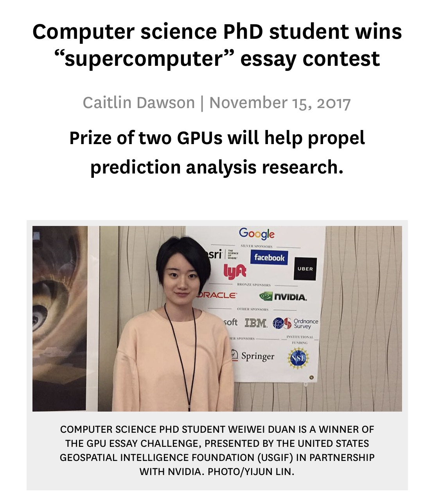SPONSORS